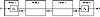

| Previous | Table of Contents | Next |
Imagine a synchronous communications line, encrypted using 1-bit CFB. After initialization, the line can run indefinitely, recovering automatically from bit or synchronization errors. The line encrypts whenever messages are sent from one end to the other; otherwise it just encrypts and decrypts random data. Eve has no idea when messages are being sent and when they are not; she has no idea when messages begin and end. All she sees is an endless stream of random-looking bits.
If the communications line is asynchronous, the same 1-bit CFB mode can be used. The difference is that the adversary can get information about the rate of transmission. If this information must be concealed, make some provision for passing dummy messages during idle times.
The biggest problem with encryption at the physical layer is that each physical link in the network needs to be encrypted: Leaving any link unencrypted jeopardizes the security of the entire network. If the network is large, the cost may quickly become prohibitive for this kind of encryption.
Additionally, every node in the network must be protected, since it processes unencrypted data. If all the network’s users trust one another, and all nodes are in secure locations, this may be tolerable. But this is unlikely. Even in a single corporation, information might have to be kept secret within a department. If the network accidentally misroutes information, anyone can read it. Table 10.2 summarizes the pros and cons of link-by-link encryption.
End-to-End Encryption
Another approach is to put encryption equipment between the network layer and the transport layer. The encryption device must understand the data according to the protocols up to layer three and encrypt only the transport data units, which are then recombined with the unencrypted routing information and sent to lower layers for transmission.
This approach avoids the encryption/decryption problem at the physical layer. By providing end-to-end encryption, the data remains encrypted until it reaches its final destination (see Figure 10.2). The primary problem with end-to-end encryption is that the routing information for the data is not encrypted; a good cryptanalyst can learn much from who is talking to whom, at what times and for how long, without ever knowing the contents of those conversations. Key management is also more difficult, since individual users must make sure they have common keys.
| Table 10.2 Link-by-Link Encryption: Advantages and Disadvantages | |
|---|---|
| Advantages: | |
| Easier operation, since it can be made transparent to the user. That is, everything is encrypted before being sent over the link. | |
| Only one set of keys per link is required. | |
| Provides traffic-flow security, since any routing information is encrypted. | |
| Encryption is online. | |
| Disadvantages: | |
| Data is exposed in the intermediate nodes. | |

Figure 10.2 End-to-end encryption.
Building end-to-end encryption equipment is difficult. Each particular communications system has its own protocols. Sometimes the interfaces between the levels are not well-defined, making the task even more difficult.
If encryption takes place at a high layer of the communications architecture, like the applications layer or the presentation layer, then it can be independent of the type of communication network used. It is still end-to-end encryption, but the encryption implementation does not have to bother about line codes, synchronization between modems, physical interfaces, and so forth. In the early days of electromechanical cryptography, encryption and decryption took place entirely offline; this is only one step removed from that.
Encryption at these high layers interacts with the user software. This software is different for different computer architectures, and so the encryption must be optimized for different computer systems. Encryption can occur in the software itself or in specialized hardware. In the latter case, the computer will send the data to the specialized hardware for encryption before sending it to lower layers of the communication architecture for transmission. This process requires some intelligence and is not suitable for dumb terminals. Additionally, there may be compatibility problems with different types of computers.
The major disadvantage of end-to-end encryption is that it allows traffic analysis. Traffic analysis is the analysis of encrypted messages: where they come from, where they go to, how long they are, when they are sent, how frequent or infrequent they are, whether they coincide with outside events like meetings, and more. A lot of good information is buried in that data, and a cryptanalyst will want to get his hands on it. Table 10.3 presents the positive and negative aspects of end-to-end encryption.
Combining the Two
Table 10.4, primarily from [1244], compares link-by-link and end-to-end encryption. Combining the two, while most expensive, is the most effective way of securing a network. Encryption of each physical link makes any analysis of the routing information impossible, while end-to-end encryption reduces the threat of unencrypted data at the various nodes in the network. Key management for the two schemes can be completely separate: The network managers can take care of encryption at the physical level, while the individual users have responsibility for end-to-end encryption.
| Table 10.3 End-to-End Encryption: Advantages and Disadvantages | |
|---|---|
| Advantages: | |
| Higher secrecy level. | |
| Disadvantages: | |
| Requires a more complex key-management system. | |
| Traffic analysis is possible, since routing information is not encrypted. | |
| Encryption is offline. | |
Encrypting data for storage and later retrieval can also be thought of in the Alice and Bob model. Alice is still sending a message to Bob, but in this case “Bob” is Alice at some future time. However, the problem is fundamentally different.
In communications channels, messages in transit have no intrinsic value. If Bob doesn’t receive a particular message, Alice can always resend it. This is not true for data encrypted for storage. If Alice can’t decrypt her message, she can’t go back in time and re-encrypt it. She has lost it forever. This means that encryption applications for data storage should have some mechanisms to prevent unrecoverable errors from creeping into the ciphertext.
The encryption key has the same value as the message, only it is smaller. In effect, cryptography converts large secrets into smaller ones. Being smaller, they can be easily lost. Key management procedures should assume that the same keys will be used again and again, and that data may sit on a disk for years before being decrypted.
Furthermore, the keys will be around for a long time. A key used on a communications link should, ideally, exist only for the length of the communication. A key used for data storage might be needed for years, and hence must be stored securely for years.
Other problems particular to encrypting computer data for storage were listed in [357]:
| Previous | Table of Contents | Next |
){kind=link}
){kind=link}